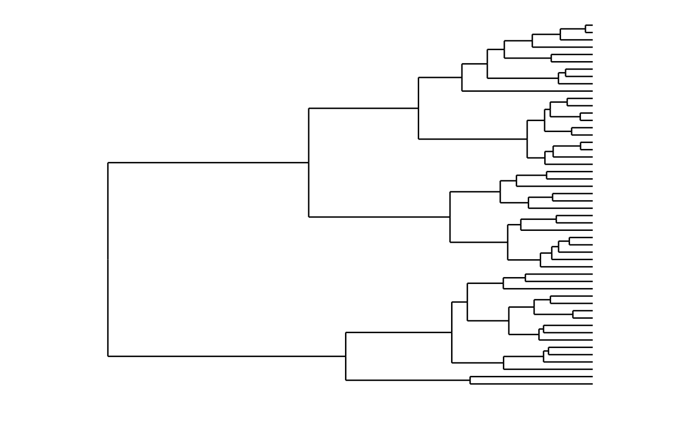
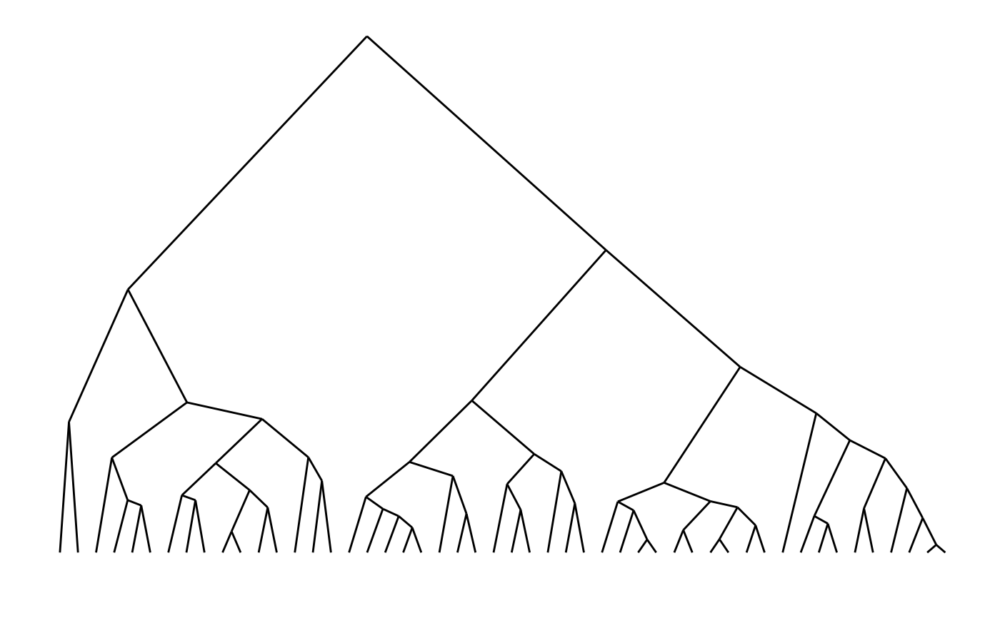
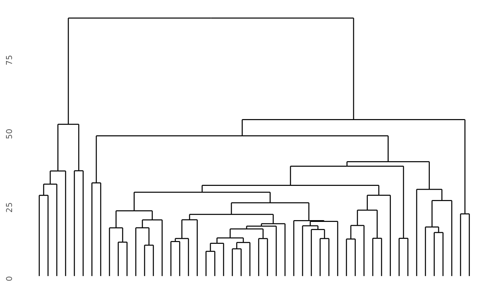
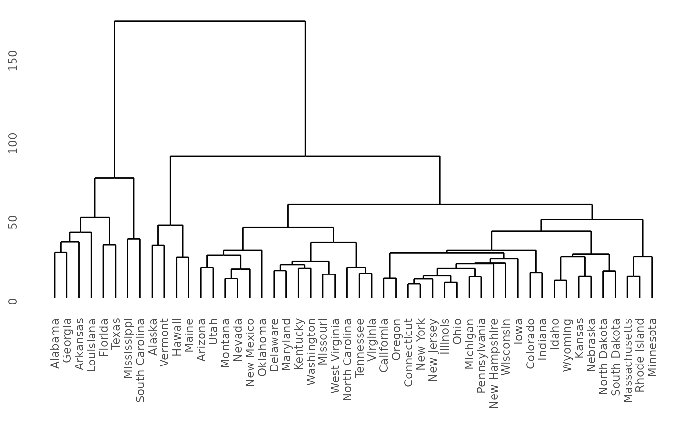

Extract cluster data from a model into a list of data frames.
Source:R/dendro_data.R, R/dendrogram.R
dendro_data.RdThis function provides a generic mechanism to extract relevant plotting data, typically line segments and labels, from a variety of cluster models.
Extract line segment and label data from stats::dendrogram() or stats::hclust() object. The resulting object is a list of data frames containing line segment data and label data.
dendro_data(model, ...) # S3 method for default dendro_data(model, ...) # S3 method for dendrogram dendro_data(model, type = c("rectangle", "triangle"), ...) # S3 method for hclust dendro_data(model, type = c("rectangle", "triangle"), ...) # S3 method for twins dendro_data(model, type = c("rectangle", "triangle"), ...)
Arguments
| model | object of type |
|---|---|
| ... | ignored |
| type | The type of plot, indicating the shape of the dendrogram. "rectangle" will draw rectangular lines, while "triangle" will draw triangular lines. |
Value
a list of data frames that contain the data appropriate to each cluster model
A list with components:
Line segment data
Label data
Details
For stats::dendrogram() and tree::tree() models, extracts line segment
data and labels.
See also
There are several implementations for specific cluster algorithms:
dendro_data.hclust()dendro_data.dendrogram()
To extract the data for line segments, labels or leaf labels use:
segment(): the line segment datalabel(): the text for each end segmentleaf_label(): the leaf labels of a tree diagram
Other dendro_data methods:
dendro_data.rpart(),
dendro_data.tree(),
dendrogram_data(),
rpart_labels()
Other dendrogram/hclust functions:
dendrogram_data()
Examples
require(ggplot2)#>### Demonstrate dendro_data.dendrogram model <- hclust(dist(USArrests), "ave") dendro <- as.dendrogram(model) # Rectangular lines ddata <- dendro_data(dendro, type = "rectangle") ggplot(segment(ddata)) + geom_segment(aes(x = x, y = y, xend = xend, yend = yend)) + coord_flip() + scale_y_reverse(expand = c(0.2, 0)) + theme_dendro()# Triangular lines ddata <- dendro_data(dendro, type = "triangle") ggplot(segment(ddata)) + geom_segment(aes(x = x, y = y, xend = xend, yend = yend)) + theme_dendro()# Demonstrate dendro_data.hclust require(ggplot2) hc <- hclust(dist(USArrests), "ave") # Rectangular lines hcdata <- dendro_data(hc, type = "rectangle") ggplot(segment(hcdata)) + geom_segment(aes(x = x, y = y, xend = xend, yend = yend)) + coord_flip() + scale_y_reverse(expand = c(0.2, 0)) + theme_dendro()# Triangular lines hcdata <- dendro_data(hc, type = "triangle") ggplot(segment(hcdata)) + geom_segment(aes(x = x, y = y, xend = xend, yend = yend)) + theme_dendro()### Demonstrate the twins of agnes and diana, from package cluster if (require(cluster)) { model <- agnes(votes.repub, metric = "manhattan", stand = TRUE) dg <- as.dendrogram(model) ggdendrogram(dg) }#>if (require(cluster)) { model <- diana(votes.repub, metric = "manhattan", stand = TRUE) dg <- as.dendrogram(model) ggdendrogram(dg) }